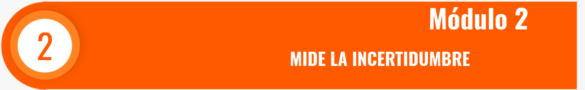

Para una variable con distribución bonomial \(X \sim binom(x, n=10, p=0.40)\), Determinar utilizando la función de distribución de probabilidad asociada a \(X\) las siguientes probabilidades: .
Suponga que \(X\) tiene una distriubución Posson con media \(\lambda = 4\) , \(X \sim pois(x, \lambda =4)\)
Sea una variable geométrica \(X \sim geomn,(x,p=0.05)\) . Determine :
Suponga que \(X\) tiene una distribución hipergeometrica con \(N=100\), \(n=4\) y \(K=20\). (\(X\sim hyper(x,N=100,n=4,k=20)\)) Determine:
# dhyper(x, # valor de x
# m, # casos existoros : k = 20
# n, # casos no exitosos : N-k = 80
# k) # muestra que se extrae :n = 4
# m*n = N : total de la urna : 100
#
dhyper(1, m=20, n=80, k=4 )5. Modelo binomial negativo Sea la variable \(X\) con distribución binomial negativa con \(p=0.20\) y \(k=3\), \(n=5\). Determine:
# dnbinom(x, # valor de x
# size, # numero de exitos requeridos
# prob) # probabilidad de exito
dnbinom(3,3,0.20)Los clientes llegan al mostrador de una tienda de acuerdo con una variable aleatoria Poisson con una frecuencia promedio de ocho clientes por hora.
Calcule la probabilidad de que entre las 8 AM y las 9 AM lleguen exactamente cinco clientes.
Calcule la probabilidad de que entre las 2:30 PM y las 3:30 PM no lleguen más de tres clientes.
Calcule la probabilidad de que lleguen exactamente dos clientes dentro de un intervalo de dos horas continuas, por ejemplo entre 10 AM y 12 M.
Calcule el valor esperado del número de personas que llegan a la tienda entre las 2 PM y las 4:30 PM.
El gerente de una compañia especializada en encuestas de opinión afirma que al rededor del 70% de las personas a quienes la agencia envía un cuestrionario responden llenando y devolviendo el cuestionario. Se envian 20 cuestionarios. Ante lo anterior el grupo de directivos hacen la siguiente apuesta:
Quien tiene mayor probabilidad de acertar?
Una empresa de servicios ha implementado nuevas estrategias para mejorar la satisfacción de sus clientes. Basándose en encuestas anteriores, la empresa sabe que el 80% de los clientes solían quedar satisfechos antes de los cambios. Como parte de su política de evaluación, la empresa tiene como objetivo que al menos el 85% de los clientes seleccionados al azar muestren satisfacción para considerar que las nuevas estrategias son efectivas.
Para evaluar el éxito de las estrategias, la empresa selecciona 10 clientes al azar y registra cuántos de ellos están satisfechos.
Si 8 de los 10 clientes seleccionados están satisfechos, ¿debería la empresa concluir que las nuevas estrategias están funcionando, o debe realizar cambios adicionales para alcanzar su objetivo?
Una empresa de mercadeo está realizando una campaña de telemercadeo para promocionar un nuevo producto. Basado en experiencias anteriores, la empresa sabe que la probabilidad de cerrar una venta en una llamada es del 10%. Dado que el equipo de ventas debe realizar llamadas consecutivas hasta conseguir una venta, están interesados en saber cuántas llamadas, en promedio, se deben realizar antes de lograr la primera venta.
El equipo conformado por 3 vendedores obtuvo el siguiente resultado
Jose debió de realizar 5 llamada antes de obtener la primera venta Miguel en cambio realizó 3 antes de obtener la primer venta Adriana debió realizar 4 llamadas para porder realizar la primera venta
Que modelo se ajusta a este problema?
Determine el orden de efectividad de los 3 vendedores, indicando en cada caso su respectiva probabilidad
Una empresa de mercadeo está lanzando una campaña de ventas telefónicas para un nuevo producto. Según su experiencia, la probabilidad de cerrar una venta en cada llamada es del 15%. La empresa se ha propuesto cerrar 3 ventas por cada equipo de telemercadeo y quiere saber cuántas llamadas, en promedio, tendrá que hacer un equipo para alcanzar esas 3 ventas.
¿Cuántas llamadas debe esperar realizar un equipo de ventas antes de alcanzar 3 ventas exitosas, si la probabilidad de cerrar una venta en cada llamada es del 15%?